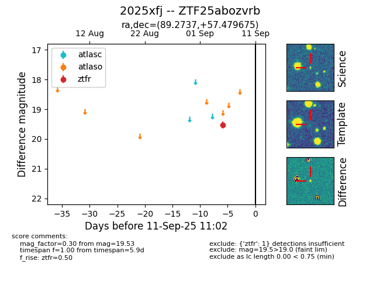

FINK: ZTF25abozvrb
Lasair: ZTF25abozvrb
ALeRCE: ZTF25abozvrb
TNS: 2025xfj
YSE: 2025xfj
ZTF25abozvrb (ztf,fink)
2025xfj (tns,yse)
equatorial (ra, dec) = (89.2737,+57.47968)
galactic (l, b) = (155.8231,+15.78906)

last ztfr=19.64
2 ztfr detections